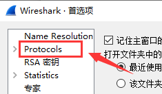
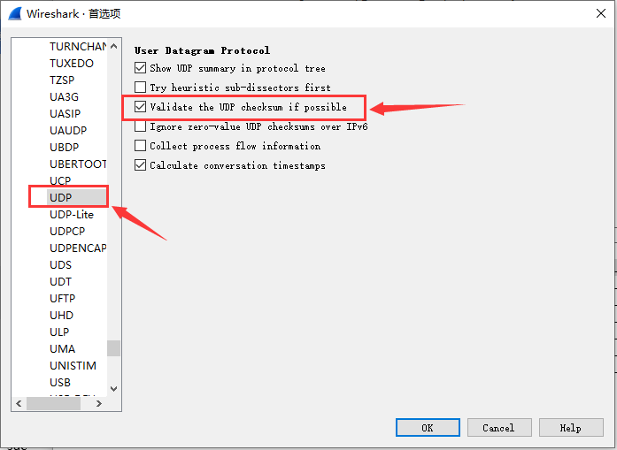

4. Lab7 常见问题（UDP）
4.1. wireshark能捕获到UDP的收发包，但是UDP调试工具没有接收到？
如下图所示：

可能的解决方法：
wireshark有时候不校验IPv4首部校验和及UDP校验和，你需要在wireshark软件的菜单栏单击“编辑” —— “首选项”，在弹出的窗口中选择“Protocols”。
找到“IPv4”，选择“Validate the IPv4 checksum if possible”。

找到“UDP”，选择“Validate the UDP checksum if possible”。
然后在wireshark的包分析窗口，分别检测IP头部和UDP头部的checksum字段是否正常。如果不正常，请自行检测IP的checksum16函数和UDP的udp_checksum函数。

4.2. 使用wireshark捕获的IP报文的checksum为什么是0？
出现这种问题的原因，一般是开启电脑网卡的“硬件校验和”功能。只要开启该功能就不会进行校验和的计算，降低协议处理开销，从而提高数据转发的速度。然而，如果IP首部的IP地址遇到损坏，可能会对其他通信造成不好的影响。为了通过实验测试，还是建议同学们使能校验和检测功能。


有些同学在使用无线网卡时，在网卡高级属性里没有上述对应的选项，那就无法使能校验和检测功能，建议最好能用有线网卡来测试实验。
详见Wireshark的官方说明：https://wiki.wireshark.org/CaptureSetup/Offloading
备注
如果你也是需要无线网卡，有线网卡又无法使用，可以参考来自某同学提供的解决方案：
如果你电脑里安装有虚拟机，假设你电脑中虚拟机生成的虚拟网卡的IP地址如下图所示：

注意：此方案必须要安装有虚拟机，这样才会生成虚拟机的虚拟网卡。
将config.h中的IP地址改成192.168.56.XX，确保和虚拟机的虚拟网卡处在同一个网段内，即可用虚拟机的虚拟网卡与协议栈中的虚拟网卡进行点对点互通。
4.3. UDP实验不能GDB调试吗？
UDP实验也能用GDB调试，调试方法和Eth、ARP、IP、ICMP实验不一样，可参考 main调试 方法。
4.4. UDP调试工具每点击一次发送，Wireshark能捕获到两个包？
如下图所示：

这种情况也算是对的，只要你的协议栈能回复一个包就行。UDP调试工具同时发送两个包估计是npcap的bug，详见：https://github.com/nmap/npcap/issues/58
4.5. 运行main.exe提示“Error, no interface found.”
如下图所示：

出现上述错误，原因是IP地址没写对，关于目标IP地址的定义可参考 Windows开发环境搭建 最后的提示部分。
4.6. 运行main.exe提示“have the same ip XX.XX.XX.XX with me”
如下图所示：

出现上述错误，原因是虚拟网卡的IP地址写成真实网卡的IP地址了，关于目标IP地址的定义可参考 Windows开发环境搭建 最后的提示部分。